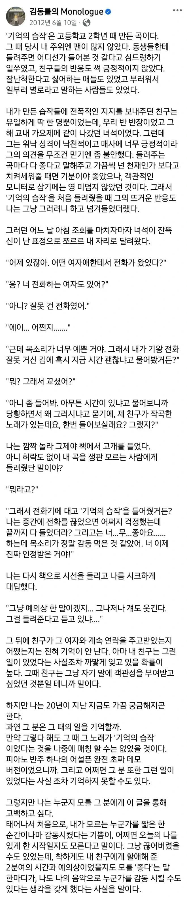

캬

캬
뭐? 아이고 찾아보니 암이었나 보네. 한창 나이에... ㅠㅠ
센스있게 글 앞에다 기억의 습작 노래 유튜브 링크 달아야지
ㄹㅇ 감다뒤
그런 브금저장소 갬성 찾으려면 2010년대 중반까지가야해
이 글 자체가 그시절 갬성 같은데
캬 친구분 친화성 넘 좋네
낭만이 있다
'너 천재인가보다'
진짜 천재 맞는데..??
진짜 천재 맞았잖아 ㅋㅋㅋㅋ
낭만 합격
김동률 -오래된 노래 이거 가사가 이 에피소드 배경일지도
오래전에 함께 듣던 노래가
'생일선물로 만들어 준 노래'
겠냐...???
친구도 난놈이네 진짜
고2때 저런 노래를 만들다니..재능은 대단하구나
진짜 난놈이었어 고딩때
일요일 막콘가는데 어서빨리!!!
작년 겨울이었나 서동욱님 돌아가셨다고 그래서 참 먹먹했음..